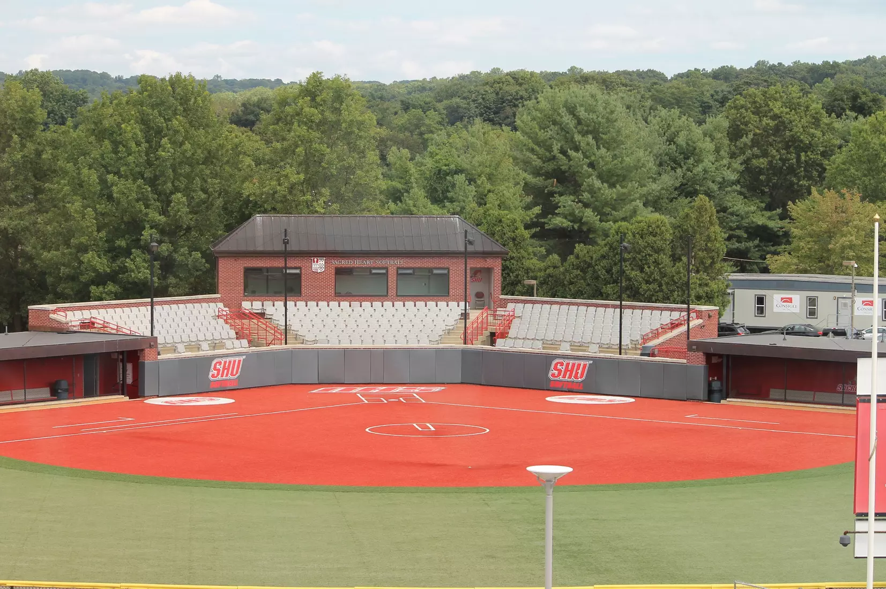

A year after breaking ground, co-head coaches Elizabeth Luckie and Pam London cut the ribbon on the home of Sacred Heart softball in the fall of 2012. The park is located at the bottom of the Jefferson Hill, down the street from the William H. Pitt center. The Scholars Commons residence halls are situated just beyond foul territory along the right field line. Pioneer Park offers chair-back seating to 326 spectators between first and third base inside the stadium, as well as lawn viewing beyond the outfield fence. The new Pioneer Park sits in the same ground as the previous Pioneer Park, on which SHU claimed the 2011 Northeast Conference Crown. The Sacred Heart softball team moved to Pioneer Park with the transition to Division I, playing on the field for the first time in 2000.
https://sacredheartpioneers.com/facilities/pioneer-park/12